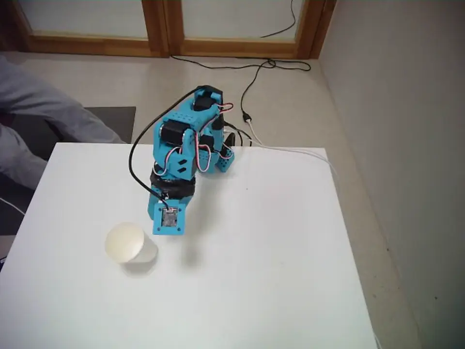

ERH Physical AI Hackathon, Zurich
FLUX.3 Action on SO-101
2nd in the Imagine, then Act track
October 2026
Team Trainers, 30 hours at DARE campus
We tested Black Forest Labs' FLUX.3 Action world action model zero-shot on a physical SO-101 with a scene camera and a wrist camera, running inference remotely on an NVIDIA H100 through AWS. Calibration issues limited the zero-shot runs. We then collected 100 episodes each of Snickers placement and paper-cup stacking, with other objects scattered on the table, and fine-tuned at batch size 2.
Of the 3,000-, 4,000- and 6,000-step checkpoints, 6,000 steps worked best: 8 of 10 Snickers placements and 5 of 10 cup stacks on the real arm, scored as separate tasks.